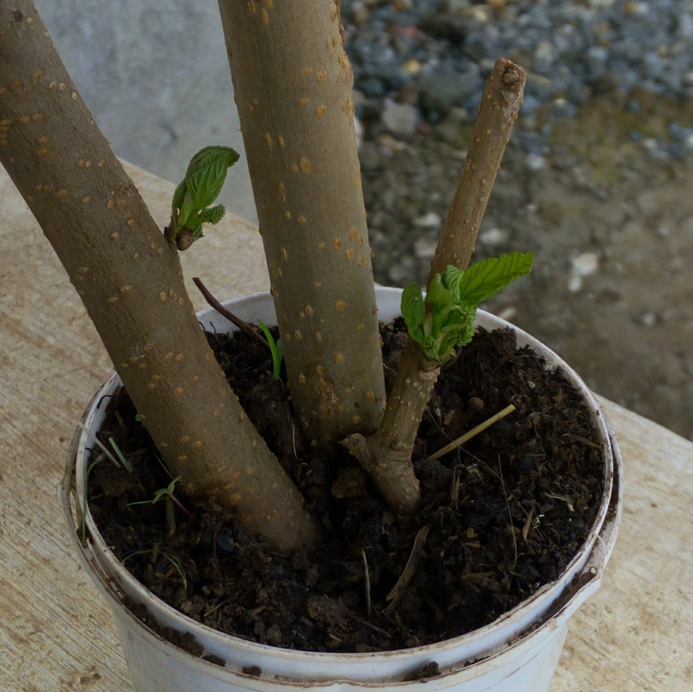

Straight out of campus, I got the opportunity to learn auditing and that's what I have been doing for the past decade or so. You can give me receipts, invoices, bank statements and I will be able to extract a set of accounts from the information. In addition have gained exposure to Financial Reporting Standards (IFRSs) serving the FiRe Award Committee as an evaluator and applied and got a practicing certificate to sign off on audit reports.
On a trip to Kitale I cut off a branch and planted it in a container in the hopes that it would grow. The branch budded and this represents me starting out in this vast field.
The need for the accountancy profession is declining, according to the World Econnomic Forum Future of Jobs Report 2018 WEF_Future_of_Jobs_2018 employees will need reskilling and additional training to help them thrive in the work place of the future. Moringa presents an opportunity to learn and perhaps a stepping stone where the rest of your growth is upto to you, having been pushed a little into the water and how far you venture is entirely up to you.